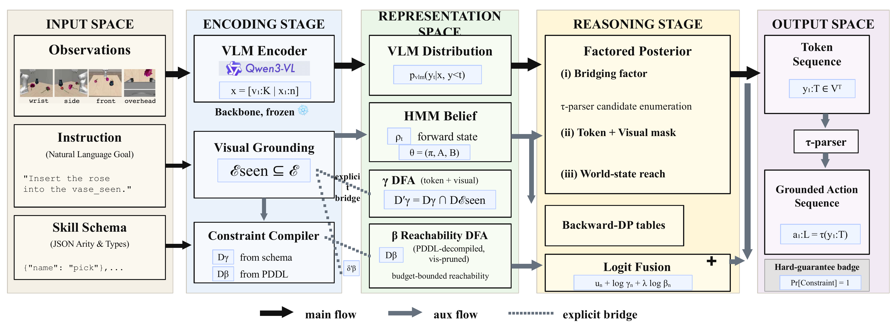
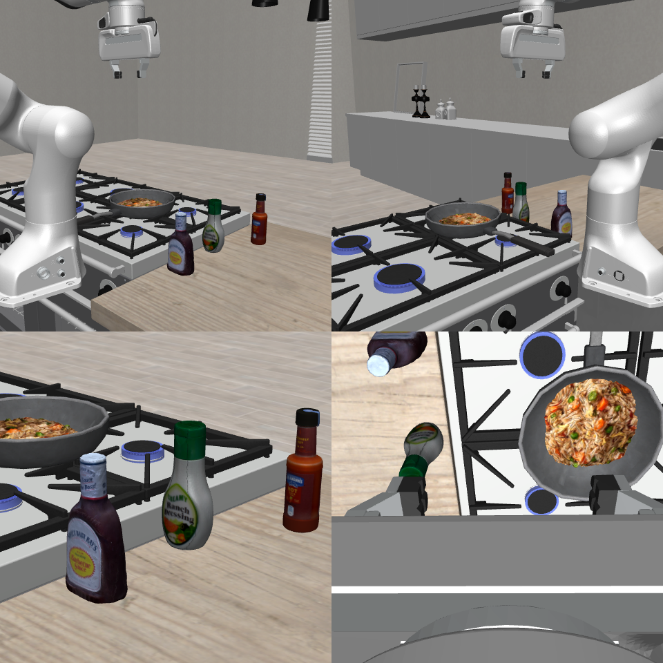
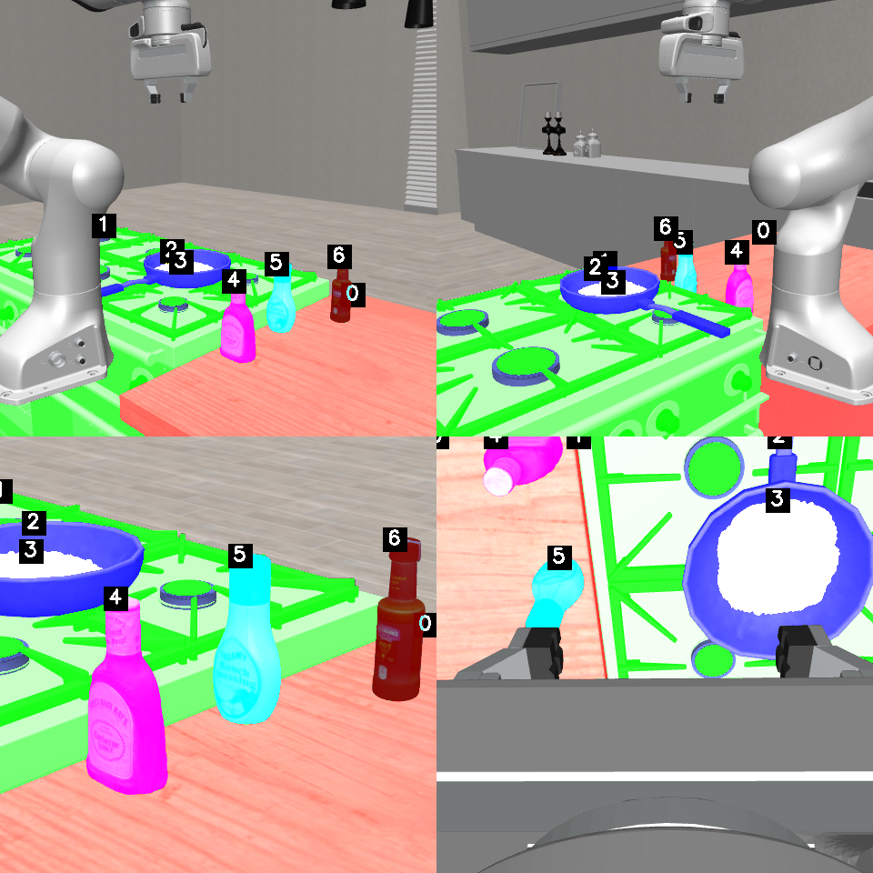
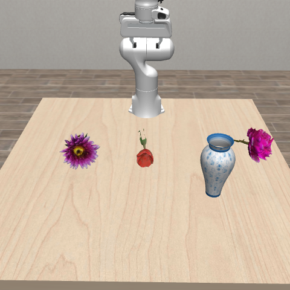
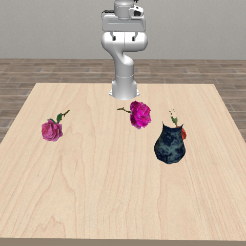

“red mug”→ pick
Perceptual support
Names an object that is not visible
The generated entity is syntactically plausible but absent from the episode-specific support set.
Unsupported entityResearch projectEmbodied AI · Constrained generation
A frozen VLM can see a scene and still plan with objects or actions that the scene does not support. CLAMP turns visual evidence and a supplied symbolic action model into hard constraints that act while the plan is generated.
Michigan State University · Heterogeneous Learning and Reasoning (HLR) Lab

Observation-conditioned hard masks define what is feasible. HMM lookahead ranks only the choices that remain.
A fluent plan is not necessarily an executable plan.
Constrain the distribution before an invalid action enters the sequence.
01 / Why CLAMP
Soft visual conditioning can leave unsupported continuations in the model distribution. Post-hoc checking arrives only after those choices have compounded into a plan.
Perceptual support
The generated entity is syntactically plausible but absent from the episode-specific support set.
Unsupported entityAction transition
The sequence reads naturally, yet the symbolic world state cannot execute the next step.
Infeasible actionSafety and goals
Grammar alone cannot enforce safety, transition, and goal conditions over the full plan.
Constraint violation02 / Method
CLAMP keeps the VLM frozen. Visual evidence supplies an episode-specific visibility constraint; syntax and the supplied symbolic action model define the rest of the planning interface.
Observe
The same multimodal context reaches the planner and the interface builder.
Compile
Visible entities, syntax, transitions, and goal conditions are compiled into two runtime recognizers.
Decode
Hard masks remove invalid continuations; a soft prior ranks the feasible set.
Hard · token level
The token-level DFA intersects the action language with the scene-supported entity vocabulary.
Hard · action level
The action-level DFA accepts only grounded actions whose supplied transitions preserve goal reachability.
Soft · feasible set
A learned sequence prior re-ranks admissible continuations without overriding any hard constraint.
03 / Results
The evaluations separate visual grounding, rule compliance, and decoder cost instead of folding every outcome into a single success claim.
VLABench · frozen Qwen3-VL-8B · 480 prompts
+5.4
Observation-conditioned hard constraints raise weighted-DSL from 28.7 to 34.1; the text HMM reaches 37.1 and the supervised vision HMM reaches 38.7.
The final row uses benchmark skill/image pairs plus per-instance calibration. Because there is no matched no-calibration row for that supervised vision HMM, 37.1→38.7 is a cumulative configuration contrast, not an isolated TTA effect.
InternVL3.5-8B · 474 prompts · matched four-dimension subset
Format validity remains 1.000. This matched result supports interface conformance; it is not evidence that CLAMP adds visual knowledge.
SafeAgentBench · legitimate long horizon · CLAMP-policy
Safe completion rises from 0.06 to 0.18 with backup-and-retry plus validated forced-action injection. This is not the one-pass CLAMP-standard decoder.
TaPA-60 grounding diagnostic
This is a grounding diagnostic, not a task-success gain; the benchmark self-judge is also sensitive to harness metadata.
Cross-domain HMM calibration · VH→BEHAVIOR
A 56.6% reduction after 30K target continuations and three Baum–Welch iterations in 417 seconds (about seven minutes), with the VLM frozen. Planning remains mixed: five dimensions show single-skill collapse.
04 / Qualitative evidence
This InternVL3.5 measured trace records raw and post-processor probabilities from the same frozen generate call—no illustrative re-scoring.


“This dish lacks a deep, tangy touch. Maybe adding something could elevate its taste.”
Ground truth: pick(4 = bbq_sauce) → pour(2 = pan_seen)
Unconstrained · failure
pick("bbq_sauce") → pour("pan_seen") → place("dishes")
DFA + HMM · accepted plan
pick(4) → pour(2)
DFA masks a 92.12% markdown-fence token.
DFA removes the quote that would open a string value.
A uniform HMM bonus preserves the legal digits' ranking.
Soft HMM re-ranking shifts probability toward closing.
Evidence boundary: This InternVL3.5 measured trace uses the VLABench non-interactive plan evaluator. The DFA supplies schema compliance, visibility supplies entity support, and the HMM raises STOP from 11.91% to 69.83%. It demonstrates interface compliance and correct termination—not improved semantic recognition, a main Qwen3-VL result, or simulator execution-success.
View the complete measured trace
Plan-match example
A representative example from the public 20-episode demonstration release.

Counterexample
The failure split preserves cases where planning and downstream execution come apart.
05 / Dataset
The public demonstration release pairs scene inputs, grounded plans, expert references, evaluation records, and multi-camera execution videos.
Open on Hugging Face06 / Citation
CLAMP appears in Findings of the Association for Computational Linguistics: EMNLP 2026.
@inproceedings{ma2026clamp,
title = {{CLAMP}: Constrained Decoding for Vision-Language Embodied Planning},
author = {Ma, Tianyi and Kordjamshidi, Parisa},
booktitle = {Findings of the Association for Computational Linguistics: EMNLP 2026},
year = {2026},
publisher = {Association for Computational Linguistics}
}07 / Acknowledgements
We thank Gwen Yidou-Weng and Haoyi Qiu for early discussions that helped shape the initial idea. We also thank Danial Kamali, Tanawan Premsri, Josue Kpodo, Ellie Xia, Shreya Rajpal, and Baktash Ansari of the MSU HLR Lab for reviewing this work and providing thoughtful feedback.
{kind=link}